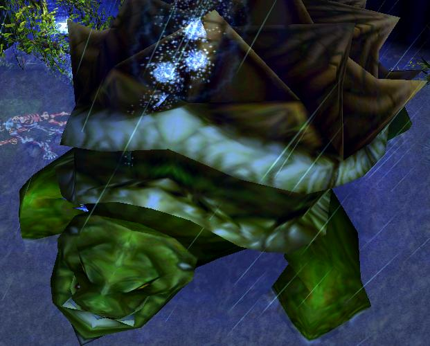

Give your drones and use W for Melee heros. They need it against Mini Blue Turtle's Bash stun.
Your T is better of to use on Healing Turtle, it prevents knockback and deals great damage if you position yourself on his way.
Remember, your W does NOT clean -armor stacks of Turtle Lord.
Save your R on Healing Turtle to slow him down, use it just before you go with your T.
None of your spells do damage to Mini Blue Turtles, if you want to use spells, use them on Mini Brown Turtles.
Your F is great to use when Mini Turtles Fall starts, or to stop Healing Turtle in track.
Saving it for finish is a waste.